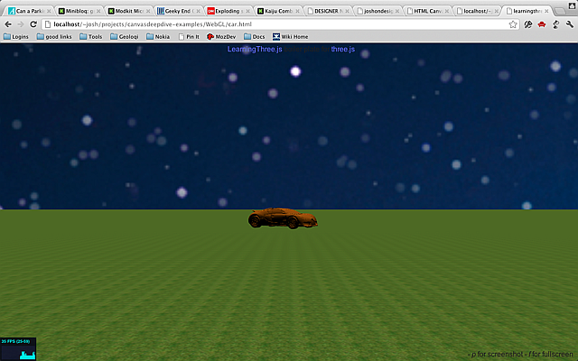

创建天空
我们会手把手创建一个新的场景：一辆小车在繁星满天的大草原上行驶。 这个是改编自 Jerome 的博客文章，他同时创建了模型构造器和供ThreeJS使用的tQuery。 （原始系列）。
以新模板the template builder开始。 现在添加一个大的立方体的一面，技巧是将地球的部分放进立方体里。 我们从加载图片进单个立方体纹理开始：
// 添加天空地图
// 加载天空图片
var urls = [
"images/sky1.png",
"images/sky1.png",
"images/sky1.png",
"images/sky1.png",
"images/sky1.png",
"images/sky1.png",
];
var textureCube = THREE.ImageUtils.loadTextureCube(urls);图片
sky1.png 包含在下载的实例中。
现在使用立方体着色器标准方式（uniforms）绘制它。注意我们已经使用tCube作为纹理。
// 设置立方体着色器
var shader = THREE.ShaderUtils.lib["cube"];
var uniforms = THREE.UniformsUtils.clone(shader.uniforms);
uniforms['tCube'].texture = textureCube;
var material = new THREE.ShaderMaterial({
fragmentShader : shader.fragmentShader,
vertexShader : shader.vertexShader,
uniforms : uniforms
});
现在，需要一个立方几何体，并设置尺寸为10000。这个立方体足够大。然后将其添加到场景中。
接着设置flipSided为true，原因是默认的立方体的纹理在外部。在我们的例子中需要，里边立方体的纹理。
// 创建skybox
var size = 10000;
skyboxMesh = new THREE.Mesh(
new THREE.CubeGeometry(size,size,size),material);
//重要!! 使用内部的替换外部
skyboxMesh.flipSided = true; // 必须设置，否则无法显示
scene.add(skyboxMesh);
然后设置灯光。没有光一切都看不见。
//添加灯光
var light = new THREE.SpotLight();
light.position.set(0,500,0);
scene.add(light);目前为止看到的：

制作地平面
现在需要一地平面。首先下载草坪图像（元素图像）作为纹理。 （草坪图像同样亦在下载的代码中。）设置水平跟竖直方向上的平铺。 平铺值一般与纹理的尺寸同等大小，或者是其的2倍。
// 添加地平面
var grassTex = THREE.ImageUtils.loadTexture('images/grass.png');
grassTex.wrapS = THREE.RepeatWrapping;
grassTex.wrapT = THREE.RepeatWrapping;
grassTex.repeat.x = 256;
grassTex.repeat.y = 256;
var groundMat = new THREE.MeshBasicMaterial({map:grassTex});接下来是几何体。就是空间中的一个平面。平面的大小是400*400，相比相机来说够大了，但对于10000的天空就小得多了。
var groundGeo = new THREE.PlaneGeometry(400,400);
接着合并到同一个网格中。
设置position.y为-1.9那么它就位于环状下面。
设置position.x为90度，地面就是水平的（平面默认是竖直的。）
如果不生效，地平面尝试设置doubleSided为true。平面默认只绘制一面。
var ground = new THREE.Mesh(groundGeo,groundMat);
ground.position.y = -1.9; //lower it
ground.rotation.x = -Math.PI/2; //-90 degrees around the xaxis
// 重要, 两面都绘制
ground.doubleSided = true;
scene.add(ground);现在看起来的样子：

添加车模型
另外加载车模型替换环状。
下面的案例中，Troyano
创建的布加迪威龙跑车的模型十分详细。
从这里ThreeJS examples repo
可以得到。从下载的代码中可以找到。模型是二进制格式而非JSON，加载二进制使用THREE.BinaryLoader加载器。
// 加载小车
//重要: 确保路径使用"./"能够正确加载 .bin 文件
new THREE.BinaryLoader().load('./VeyronNoUv_bin.js', function(geometry) {
var orange = new THREE.MeshLambertMaterial( { color: 0x995500, opacity: 1.0, transparent: false } );
var mesh = new THREE.Mesh( geometry, orange );
mesh.scale.x = mesh.scale.y = mesh.scale.z = 0.05;
scene.add( mesh );
car = mesh;
});
注意材质是MeshLambertMaterial而不是之前所使用的MeshNormalMaterial。
这种材质根据灯光（橙色，本案例中）给小车添加了一个良好的厚实颜色。
这小车网格模型默认比环状要大得多，所以缩小到5%并添加到场景中。
现在看起来这样：

键盘控制
当然，车只是呆在那里，一点乐趣也没有。离我们也太远了。所以我们让车动起来。
当前cameraControl对象移动相机。移除之前初始化的cameraControl对象，并创建一个KeyboardState对象。
需要在页面顶部引入：vendor/threex/THREEx.KeyboardState.js
<script src="vendor/threex/THREEx.KeyboardState.js"></script>// 创建相机控制
//cameraControls = new THREEx.DragPanControls(camera)
keyboard = new THREEx.KeyboardState();Now, go down to the
render() function. The keyboard object will let us query the current state of the keyboard.
To move the
car around using the keyboard replace
cameraControls.update() with this code:
接着，向下找到render()函数。
keyboard对象让我们知道键盘的当前状态。
使用对象keyboard移动小车并使用以下代码替换 cameraControls.update()：
// 更新相机控制
//cameraControls.update();
if(keyboard.pressed("left")) {
car.rotation.y += 0.1;
}
if(keyboard.pressed("right")) {
car.rotation.y -= 0.1;
}
if(keyboard.pressed("up")) {
car.position.z -= 1.0;
}
if(keyboard.pressed("down")) {
car.position.z += 1.0;
}
现在能够使用键盘来开车了。
当然，这看上去并不十分真实。汽车可以侧着滑行。为了解决这个问题，我们需要一个向量来表示汽车的当前方向。
添加一个angle变量并修改代码，看起来这样：
if(keyboard.pressed("left")) {
car.rotation.y += 0.1;
angle += 0.1;
}
if(keyboard.pressed("right")) {
car.rotation.y -= 0.1;
angle -= 0.1;
}
if(keyboard.pressed("up")) {
car.position.z -= Math.sin(-angle);
car.position.x -= Math.cos(-angle);
}
if(keyboard.pressed("down")) {
car.position.z += Math.sin(-angle);
car.position.x += Math.cos(-angle);
}下一步
这就是手把手的代码。如果你希望继续完成这个案例，以下是一些能够增加的。
- 相机跟随小车。
- 让小车发光。可以查看案例中的源代码。
- 小车到达世界边缘时停下。
- 将之前章节中的点屏幕效果添加到场景中。
查看最终版本 这里。